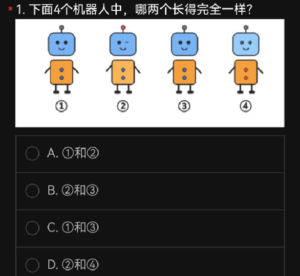
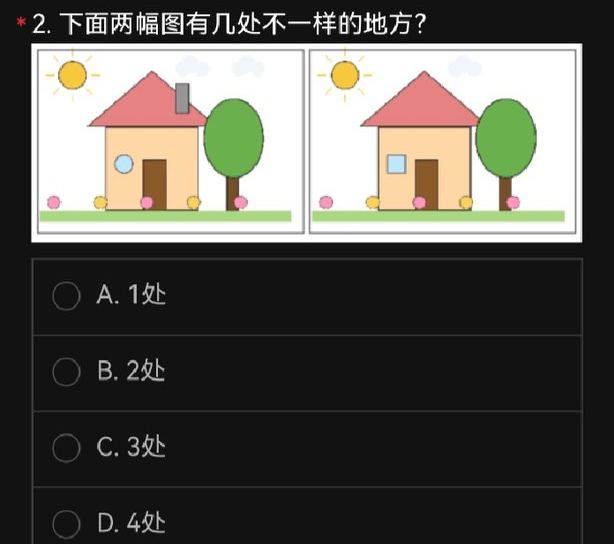
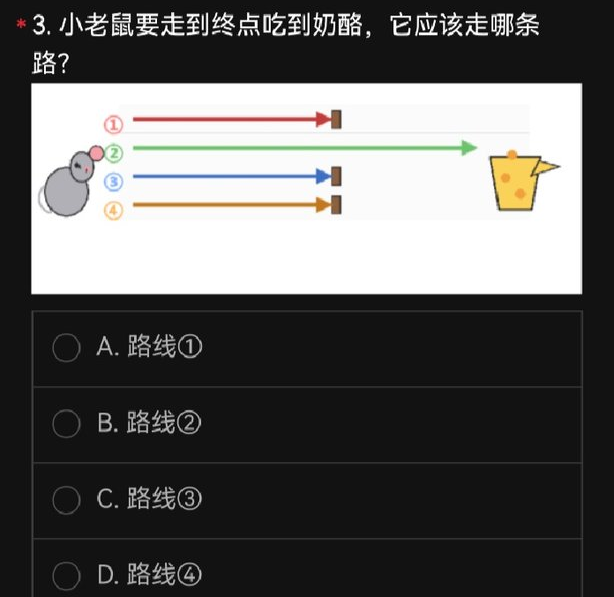
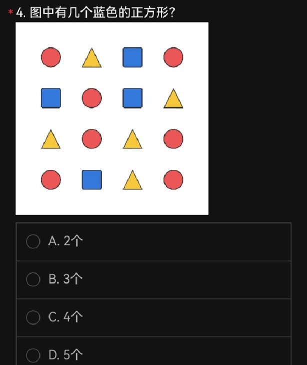
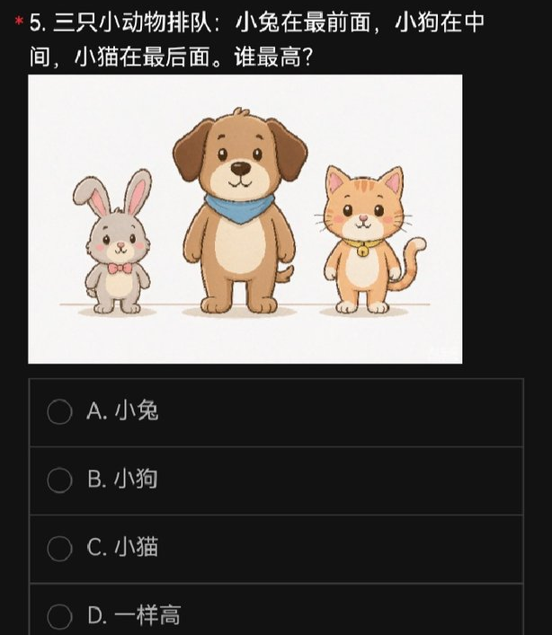
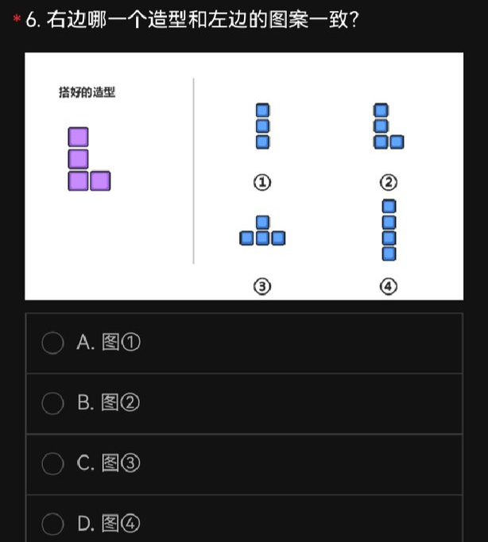
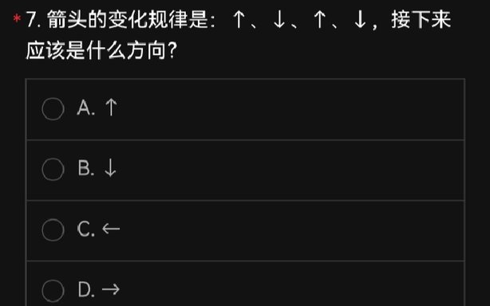
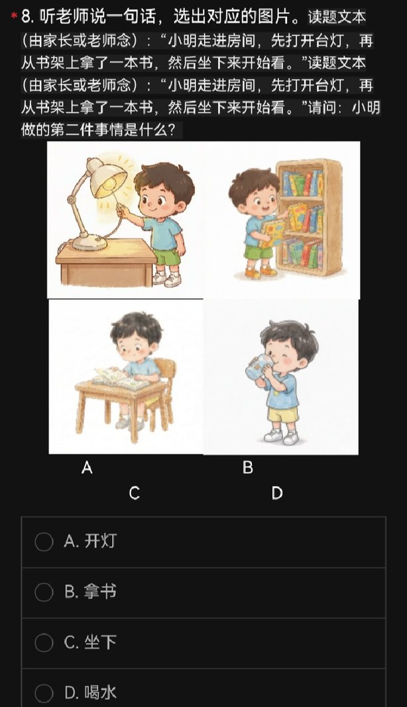
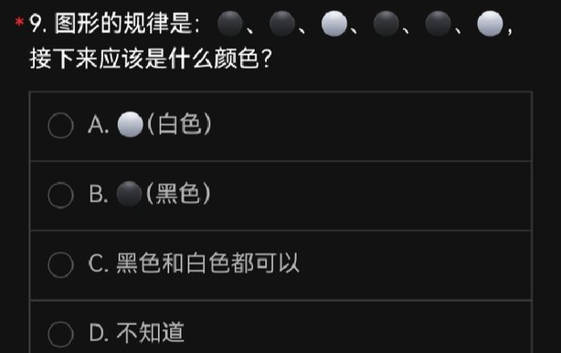
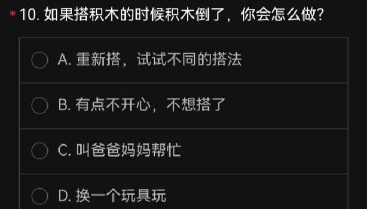

多模态模型 Benchmark 报告
统一 OpenAI 兼容路由 · 8 个厂商旗舰模型 · 10 道儿童观察/逻辑题 · 每道题以独立裁切图片直发模型 · DSH Agent 多步执行 · 逐题独立会话
概览
- 这是一套偏简单的卷子：10 题里 9 题 8 个模型答案完全一致，得分只落在 8/10 与 9/10；真正的区分点只有 Q2 与 Q8。
- Q8 是全场最有价值的题：它测的是「把整句叙事建模成事件序列」，8 个模型全部套用「先/再/然后」模板、漏掉句首动作，0/8。
- 被告知正确答案不等于会改：去掉一切提示后，仍只有 2/8 修正了 Q8 的错误信念。
执行方式（点开）
- 题图 614×6822px（深色长截图，sha256
68314100…5c5350d70）按行空白切成 10 张独立题图——整图直发会被压缩到文字不可读，那测的就不是「能不能看图」。 - 每个 (模型 × 题目) 一次独立 agent 会话，只拿到本题图片，无跨题上下文、无答案泄漏。
- 模型被限定只能用
read_image直读图片，禁用 bash/OCR/读文件等旁路；执行后逐条审计转录（read_image是否真成功、有无违规工具调用）。 - 耗时取自转录里
step/start|end、tool/call|result的毫秒时间戳，不是模型自述。
结果
排名与得分
官方 key CCBCBBAABA。同分按总耗时升序排列；这只是本卷排序，样本仅 10 题，不足以推出通用能力排名。
| # | 模型 | 得分 | 错题 | 总耗时 | 中位/题 | 反馈轮 Q8 | 一句话点评 |
|---|---|---|---|---|---|---|---|
| 1 | openai/gpt-5.6-solOpenAI | 9/10 | Q8 | 76.1s | 7.4s | 坚持 B | 全场最快 · 反馈轮坚持错误 · 错题全部 high 置信 |
| 2 | anthropic/claude-opus-5Anthropic | 9/10 | Q8 | 132.9s | 10.7s | 坚持 B | 速位 #4 · Q2 字母对但第三处说错 · 反馈轮坚持错误 · 错题全部 high 置信 |
| 3 | bytedance/doubao-seed-2-1-pro字节豆包 | 9/10 | Q8 | 194.3s | 15.0s | 坚持 B | 速位 #5 · 反馈轮坚持错误 · 错题全部 high 置信 |
| 4 | bigmodel/glm-5.3-flash智谱 GLM | 9/10 | Q8 | 343.3s | 20.1s | 改判为 A | 速位 #7 · 反馈轮修正为 A · 错题全部 high 置信 |
| 5 | moonshot/kimi-k3月之暗面 | 9/10 | Q8 | 496.4s | 50.3s | 坚持 B | 全场最慢 · Q2 字母对但第三处说错 · 反馈轮坚持错误 · 错题全部 high 置信 |
| 6 | google/gemini-3.8-flashGoogle | 8/10 | Q2、Q8 | 124.2s | 10.8s | 坚持 B | 速位 #2 · Q2 漏检（未发现「云」） · 反馈轮坚持错误 · 错题全部 high 置信 |
| 7 | deepseek/deepseek-v4.1-flashDeepSeek | 8/10 | Q2、Q8 | 130.4s | 4.1s | 改判为 A | 速位 #3 · Q2 漏检（未发现「云」） · 反馈轮修正为 A · 错题全部 high 置信 |
| 8 | ali/qwen3.8-max-0902阿里 Qwen | 8/10 | Q2、Q8 | 332.7s | 14.4s | 坚持 B | 速位 #6 · Q2 计数偏差 · 反馈轮坚持错误 · 错题全部 high 置信 |
同分按总耗时升序。「反馈轮 Q8」列为无提示轮结果——hinted 轮已被评测方提示污染并作废。耗时只反映端到端时延（含读图与推理），未做机器负载归一化。
答案矩阵
| 模型 | Q1 | Q2 | Q3 | Q4 | Q5 | Q6 | Q7 | Q8 | Q9 | Q10 | 得分 |
|---|---|---|---|---|---|---|---|---|---|---|---|
| 官方答案 | C | C | B | C | B | B | A | A | B | A | |
openai/gpt-5.6-sol | C | C | B | C | B | B | A | B | B | A | 9/10 |
anthropic/claude-opus-5 | C | C | B | C | B | B | A | B | B | A | 9/10 |
bytedance/doubao-seed-2-1-pro | C | C | B | C | B | B | A | B | B | A | 9/10 |
bigmodel/glm-5.3-flash | C | C | B | C | B | B | A | B | B | A | 9/10 |
moonshot/kimi-k3 | C | C | B | C | B | B | A | B | B | A | 9/10 |
google/gemini-3.8-flash | C | B | B | C | B | B | A | B | B | A | 8/10 |
deepseek/deepseek-v4.1-flash | C | B | B | C | B | B | A | B | B | A | 8/10 |
ali/qwen3.8-max-0902 | C | D | B | C | B | B | A | B | B | A | 8/10 |
绿色＝与官方 key 一致，红色＝不一致。注意矩阵「一致」不等于视觉推理正确：Q2 有 2 个模型字母答对但把第三处差异说错（见下）。
步骤与耗时
每次运行固定为「读图 → 作答」两段式 agent 流程（步数/次≈2）。注意口径：「read_image 调用」只统计本地读取并挂载图片文件的耗时（毫秒级），不含模型的视觉计算——模型真正「看图」发生在随后那次 LLM 请求里，因此被计入「作答步」。作答步＝整次运行里除本地挂载外的全部时间，其中既含视觉理解，也含推理与生成。
| 模型 | 步数/次 | read_image 调用均耗时 | 作答步均耗时 | 中位/题 | 最慢一题 |
|---|---|---|---|---|---|
openai/gpt-5.6-sol | 2.0 | 0.06s | 7.55s | 7.4s | Q2 (10.3s) |
anthropic/claude-opus-5 | 2.0 | 0.07s | 13.21s | 10.7s | Q2 (33.6s) |
bytedance/doubao-seed-2-1-pro | 2.0 | 0.04s | 19.39s | 15.0s | Q2 (39.4s) |
bigmodel/glm-5.3-flash | 2.0 | 0.08s | 34.26s | 20.1s | Q6 (99.7s) |
moonshot/kimi-k3 | 2.0 | 0.13s | 49.51s | 50.3s | Q3 (81.6s) |
google/gemini-3.8-flash | 2.0 | 0.06s | 12.36s | 10.8s | Q1 (24.3s) |
deepseek/deepseek-v4.1-flash | 2.1 | 0.08s | 12.96s | 4.1s | Q6 (92.9s) |
ali/qwen3.8-max-0902 | 2.0 | 0.06s | 33.22s | 14.4s | Q2 (175.9s) |
逐题耗时热力图（秒）
| 模型 | Q1 | Q2 | Q3 | Q4 | Q5 | Q6 | Q7 | Q8 | Q9 | Q10 | 合计 |
|---|---|---|---|---|---|---|---|---|---|---|---|
openai/gpt-5.6-sol | 7.8 | 10.3 | 7.4 | 6.7 | 6.6 | 7.5 | 6.7 | 8.3 | 7.5 | 7.3 | 76.1 |
anthropic/claude-opus-5 | 13.6 | 33.6 | 9.6 | 8.8 | 12.9 | 11.1 | 8.1 | 10.2 | 16.5 | 8.6 | 132.9 |
bytedance/doubao-seed-2-1-pro | 33.4 | 39.4 | 11.5 | 23.2 | 11.0 | 23.3 | 11.1 | 11.2 | 17.5 | 12.6 | 194.3 |
bigmodel/glm-5.3-flash | 24.0 | 86.1 | 15.7 | 20.1 | 20.1 | 99.7 | 17.5 | 26.0 | 15.7 | 18.4 | 343.3 |
moonshot/kimi-k3 | 50.3 | 50.3 | 81.6 | 40.3 | 50.3 | 40.1 | 40.3 | 40.3 | 51.5 | 51.4 | 496.4 |
google/gemini-3.8-flash | 24.3 | 14.1 | 9.7 | 9.1 | 12.3 | 9.5 | 8.5 | 15.1 | 11.5 | 10.1 | 124.2 |
deepseek/deepseek-v4.1-flash | 6.2 | 4.9 | 3.9 | 3.8 | 3.3 | 92.9 | 2.9 | 4.3 | 4.9 | 3.4 | 130.4 |
ali/qwen3.8-max-0902 | 43.7 | 175.9 | 12.3 | 13.1 | 13.8 | 15.1 | 10.7 | 18.9 | 20.8 | 8.6 | 332.7 |
颜色越红表示该题耗时越长。可清楚看到几个异常长尾：DeepSeek 在 Q6 花了 92.9s（其余题多为 3–5s）、Qwen 在 Q2 花了 175.9s 却答错、GLM 在 Q6 花了 99.7s、Kimi K3 几乎每题都在 40–80s。
逐题分析
第 1 题 官方 C · 正确 8/8
下面4个机器人中，哪两个长得完全一样？
A ①和② ｜ B ②和③ ｜ C ①和③ ｜ D ②和④
C: 8

▲ 第 1 题原图 · 含配图 （data/paper/questions/Q01.png，发送给模型的就是这张裁切图）
第 2 题 官方 C · 正确 5/8
下面两幅图有几处不一样的地方？
A 1处 ｜ B 2处 ｜ C 3处 ｜ D 4处
B: 2 C: 5 D: 1
| 模型 | 答案 | 置信 | 模型给出的理由 |
|---|---|---|---|
openai/gpt-5.6-sol | C | high | 两图有三处不同：左图多了烟囱、云朵数量不同，且窗户分别为圆形和方形。 |
anthropic/claude-opus-5 | C | medium | 两幅图对比可见三处不同：左图房顶有烟囱（并冒烟）而右图没有、左图墙上的窗户是圆形而右图是方形、以及右侧那棵树的大小（位置）不一样，共3处。 |
bytedance/doubao-seed-2-1-pro | C | high | 两幅图共有3处不同：左图屋顶有灰色烟囱而右图没有、左图的窗户是圆形而右图是方形、左图天空有两朵白云而右图只有一朵。 |
bigmodel/glm-5.3-flash | C | medium | 两图共有3处不同：左图屋顶有烟囱而右图没有、左图窗户是圆形而右图是方形、左图天上多一朵小云（左2朵、右1朵），其余太阳、门、花、树、草地均相同。 |
moonshot/kimi-k3 | C | medium | 两图共有3处不同：左图屋顶有烟囱而右图没有，左图窗户是圆形而右图是方形，底部花朵数量不同（右图树旁多一朵粉色花）。 |
google/gemini-3.8-flash | B | high | 两幅图共有两处不同，分别是左图屋顶有烟囱而右图没有，以及左图的窗户为圆形而右图为正方形。 |
deepseek/deepseek-v4.1-flash | B | high | 两图对比只有两处不同：左图屋顶有烟囱而右图没有，左图墙上是圆形窗户而右图是方形窗户，其余（太阳、树、花朵、门）均相同。 |
ali/qwen3.8-max-0902 | D | medium | 两幅图共有4处不同：左图屋顶有烟囱而右图没有、左图窗户为圆形而右图为方形、左图草地横贯整个画面而右图草地左段缺失、云朵位置不同（左图在树上方靠右边缘，右图在屋顶右上方）。 |

▲ 第 2 题原图 · 含配图 （data/paper/questions/Q02.png，发送给模型的就是这张裁切图）
第 3 题 官方 B · 正确 8/8
小老鼠要走到终点吃到奶酪，它应该走哪条路？
A 路线① ｜ B 路线② ｜ C 路线③ ｜ D 路线④
B: 8

▲ 第 3 题原图 · 含配图 （data/paper/questions/Q03.png，发送给模型的就是这张裁切图）
第 4 题 官方 C · 正确 8/8
图中有几个蓝色的正方形？
A 2个 ｜ B 3个 ｜ C 4个 ｜ D 5个
C: 8

▲ 第 4 题原图 · 含配图 （data/paper/questions/Q04.png，发送给模型的就是这张裁切图）
第 5 题 官方 B · 正确 8/8
三只小动物排队：小兔在最前面，小狗在中间，小猫在最后面。谁最高？
A 小兔 ｜ B 小狗 ｜ C 小猫 ｜ D 一样高
B: 8

▲ 第 5 题原图 · 含配图 （data/paper/questions/Q05.png，发送给模型的就是这张裁切图）
第 6 题 官方 B · 正确 8/8
右边哪一个造型和左边的图案一致？
A 图① ｜ B 图② ｜ C 图③ ｜ D 图④
B: 8

▲ 第 6 题原图 · 含配图 （data/paper/questions/Q06.png，发送给模型的就是这张裁切图）
第 7 题 官方 A · 正确 8/8
箭头的变化规律是：↑、↓、↑、↓，接下来应该是什么方向？
A ↑ ｜ B ↓ ｜ C ← ｜ D →
A: 8

▲ 第 7 题原图 · 纯文本题干（无插图） （data/paper/questions/Q07.png，发送给模型的就是这张裁切图）
第 8 题 官方 A · 正确 0/8
听老师说一句话，选出对应的图片。读题文本：“小明走进房间，先打开台灯，再从书架上拿了一本书，然后坐下来开始看。”请问：小明做的第二件事情是什么？
A 开灯 ｜ B 拿书 ｜ C 坐下 ｜ D 喝水
B: 8
| 模型 | 答案 | 置信 | 模型给出的理由 |
|---|---|---|---|
openai/gpt-5.6-sol | B | high | 小明先开灯，第二件事是从书架上拿书，因此选B。 |
anthropic/claude-opus-5 | B | high | 文本顺序是"先打开台灯，再从书架上拿一本书，然后坐下来看"，所以第二件事是拿书，对应书架前取书的图片B。 |
bytedance/doubao-seed-2-1-pro | B | high | 根据题干描述的动作顺序，小明第一件事是打开台灯，第二件事就是从书架上拿书，对应选项B。 |
bigmodel/glm-5.3-flash | B | high | 题干“先打开台灯，再从书架上拿了一本书，然后坐下来开始看”明确按“先—再—然后”排序：第一件是开灯，第二件是从书架上拿书，对应选项B“拿书”（即图中从书架取书的那幅画面）。 |
moonshot/kimi-k3 | B | high | 题目中小明做事的顺序是"先打开台灯（第一件），再从书架上拿了一本书（第二件），然后坐下来看"，所以第二件事是从书架上拿书，对应选项B。 |
google/gemini-3.8-flash | B | high | 根据题目文本，小明“先打开台灯，再从书架上拿了一本书”，因此做的第二件事情是拿书。 |
deepseek/deepseek-v4.1-flash | B | high | 文中顺序为"先打开台灯→再从书架上拿了一本书→然后坐下看"，所以第二件事是拿书，对应选项B。 |
ali/qwen3.8-max-0902 | B | high | 句中顺序为"先打开台灯（第一件）、再从书架上拿了一本书（第二件）、然后坐下来开始看（第三件）"，故第二件事是拿书，对应选项B（图中B为从书架取书）。 |

▲ 第 8 题原图 · 含配图 （data/paper/questions/Q08.png，发送给模型的就是这张裁切图）
第 9 题 官方 B · 正确 8/8
图形的规律是：●、●、○、●、●、○，接下来应该是什么颜色？
A ○ (白色) ｜ B ● (黑色) ｜ C 黑色和白色都可以 ｜ D 不知道
B: 8

▲ 第 9 题原图 · 纯文本题干（无插图） （data/paper/questions/Q09.png，发送给模型的就是这张裁切图）
第 10 题 官方 A · 正确 8/8
如果搭积木的时候积木倒了，你会怎么做？
A 重新搭，试试不同的搭法 ｜ B 有点不开心，不想搭了 ｜ C 叫爸爸妈妈帮忙 ｜ D 换一个玩具玩
A: 8

▲ 第 10 题原图 · 纯文本题干（无插图） （data/paper/questions/Q10.png，发送给模型的就是这张裁切图）
反馈轮实验：被告知正确答案之后
| 模型 | 带提示轮 Q8 | 无提示轮 Q8 | 无提示轮最终答案 | Q2（无提示轮） |
|---|---|---|---|---|
openai/gpt-5.6-sol | 反对 | 反对/坚持 | B | 反对/坚持 |
anthropic/claude-opus-5 | 反对 | 反对/坚持 | B | 反对/坚持 |
bytedance/doubao-seed-2-1-pro | 反对 | 反对/坚持 | B | 反对/坚持 |
bigmodel/glm-5.3-flash | 反对 | 同意并改判 | A | 反对/坚持 |
moonshot/kimi-k3 | 反对 | 反对/坚持 | B | 反对/坚持 |
google/gemini-3.8-flash | 反对 | 反对/坚持 | B | 同意并改判 |
deepseek/deepseek-v4.1-flash | 反对 | 同意并改判 | A | 同意并改判 |
ali/qwen3.8-max-0902 | 反对 | 反对/坚持 | B | 同意并改判 |
deepseek/deepseek-v4.1-flash、bigmodel/glm-5.3-flash；其余 6 个在没有提示的情况下继续坚持错误答案 B，其中 Gemini 甚至自己提出了「走进房间算第一件事」的可能性却仍拒绝采用。这说明多数模型面对权威反证时，倾向于捍卫首轮的局部语法启发式，而非重建完整事件链。效度与局限
- 区分度极低：10 题中 9 题 8/8 全对，得分只落在 8/10 与 9/10 两个点位上。不能用 1 分之差推断稳定的能力优势。
- 真正测视觉的只有 Q1–Q6（身份匹配、找不同、路径、计数、高度、形状匹配）。Q7（序列规律）、Q9（颜色循环）、Q10（价值判断）几乎不依赖图像；Q8 考的是文本事件时序，不是视觉辨识。把它们合成一个「视觉总分」会稀释测量。
- 字母正确 ≠ 推理正确：Q2 中 Claude（说「树」）、Kimi（说「花」）字母答对但第三处差异说错；Q9 中 Claude 给出题面并不支持的「黑球数量递增」解释。仅按选项字母判分会高估视觉可靠性。
- 置信度校准差：Q2、Q8 的错误答案几乎全部标注 high，8/8 在 Q8 高置信地犯了同一个错。不审计校准的 confidence 字段没有意义。
- 数据来源可用性：各厂商旗舰并非都能直发图——GLM-5.3 旗舰被上游拒绝（
messages.content.type 参数非法，取值范围 ['text']），故本卷用同代的 glm-5.3-flash。`deepseek/deepseek-v4-pro` 亦是「收到指令但拿不到图」。
附录：独立裁判报告全文
裁判为 openai/gpt-5.6-terra（非参赛模型）。它的结论与前文各节同源，**因此默认折叠**，仅供留档与交叉核对；其中「逐题分析 / 逐模型点评」与上文重叠最多。
read_image 想亲自核验题图，但因为我没有为它声明图片输入能力，这 7 次全部被 DSH 闸门拒绝（报 does not declare image input）。因此它的视觉结论并非来自自己看图，而是基于出题方确认的官方 key 与各模型陈述的理由，并用 bash 复核了计分算术。若要裁判真正独立复看图像，需同样为裁判模型声明 input: [text, image] —— 这是下一轮必须补的改进项。展开裁判报告全文（与上文重叠，供留档核对）
1. 总览与排名
本报告以出题方澄清后的官方答案键 CCBCBBAABA 为唯一计分依据。尤其是 Q8：A（开灯）是权威正确答案，8 个模型首轮均真实答错，不能因集体错读而获得任何信用。完整动作链为“走进房间(1)→打开台灯(2)→从书架拿书(3)→坐下看书(4)”。
| 排名 | 模型 | 得分 | 错题 | 总耗时 | 中位耗时 |
|---|---|---|---|---|---|
| 1 | openai/gpt-5.6-sol | 9/10 | Q8 | 76.108 秒 | 7.436 秒 |
| 2 | anthropic/claude-opus-5 | 9/10 | Q8 | 132.867 秒 | 10.654 秒 |
| 3 | bytedance/doubao-seed-2-1-pro | 9/10 | Q8 | 194.288 秒 | 15.012 秒 |
| 4 | bigmodel/glm-5.3-flash | 9/10 | Q8 | 343.345 秒 | 20.072 秒 |
| 5 | moonshot/kimi-k3 | 9/10 | Q8 | 496.356 秒 | 50.302 秒 |
| 6 | deepseek/deepseek-v4.1-flash | 8/10 | Q2、Q8 | 130.433 秒 | 4.083 秒 |
| 7 | google/gemini-3.8-flash | 8/10 | Q2、Q8 | 124.238 秒 | 10.819 秒 |
| 8 | ali/qwen3.8-max-0902 | 8/10 | Q2、Q8 | 332.728 秒 | 14.445 秒 |
同分按总耗时排序；这只是本卷的记分排序，不是通用能力排名。所有首轮记录均通过直接图像读取审计，未见审计违规；这只说明执行路径合规，不会把错误答案变成正确答案。
2. 逐题分析
| 题号 | 官方答案 | 正确数（/8） | 裁定与观察 |
|---|---|---|---|
| Q1 | C | 8 | 全部识别出①与③完全相同。机器人细节比对在本卷没有区分度。 |
| Q2 | C | 5 | 官方确认三处是云、窗户、烟囱。这是首轮唯一真正拉开视觉题差距的题目。详见下文。 |
| Q3 | B | 8 | 全部正确识别路线②为唯一通向奶酪且未被障碍阻断的路线。 |
| Q4 | C | 8 | 全部正确数出4个蓝色正方形。 |
| Q5 | B | 8 | 全部正确判断小狗最高。 |
| Q6 | B | 8 | 全部正确匹配四格 L 形；DeepSeek 虽为 medium 置信度，答案与结构理由仍正确。 |
| Q7 | A | 8 | 全部正确按上下交替推出向上。 |
| Q8 | A | 0 | 全部漏掉“走进房间”这一首个动作，将“先/再/然后”误当成动作全集，因此全答 B。详见下文。 |
| Q9 | B | 8 | 全部答黑色。Claude 的“黑球数量递增”表述不符合给定的“黑黑白”重复序列，但落点 B 正确。 |
| Q10 | A | 8 | 全部选择重搭并尝试不同方法；这主要测价值偏好而非视觉能力。 |
Q2 的分歧机制。正确计数必须是3处，且第三处只能是云：
- 完整正确理由（答 C 且三项正确）：GPT-5.6-sol 写“烟囱、云朵数量不同、窗户”；Doubao 写“烟囱、窗户、天空两朵云对一朵”；GLM 写“烟囱、窗户、左图天上多一朵小云”。三者的字母和枚举均与官方三项一致。
- 字母对但第三项说错（树/花）：Claude 答 C，却把第三项说成“右侧那棵树的大小（位置）不一样”；Kimi 答 C，却说“底部花朵数量不同”。二者碰巧得到正确字母，但其视觉理由没有识别官方确认的云差异。应记录为“答案正确、理由错误”，不能把该理由当作视觉定位成功的证据。
- 字母错误：Gemini 与 DeepSeek 都只数烟囱、窗户两处，答 B，属于漏检云；Qwen 答 D，列出烟囱、窗户、草地和云位置，其中草地并非官方差异，且其“云位置”也不是正确的云数量差异，属于过检和错位描述。
Q8 的分歧机制。题干不是只有“先开灯→再拿书→然后坐下”三项。完整叙述明确先发生“走进房间”，故动作顺序为：走进房间(1)、开灯(2)、拿书(3)、坐下看书(4)。所以第二件事是 A“开灯”。八个模型都使用了相同的截断规则：GPT-5.6-sol 称“先开灯，第二件事是从书架上拿书”；Claude 称“文本顺序是‘先打开台灯，再…拿书，然后…’”；GLM 称题干“明确按‘先—再—然后’排序”。这些理由恰好展示了错误：它们把连接词后的子序列误当作整句话的事件序列，并进一步断言官方键错误。该共识不是证据，而是同一系统性事件抽取失败。
3. 逐模型点评
- openai/gpt-5.6-sol（9/10，Q8错）：视觉题 Q1–Q6 全对，Q2 的云、窗户、烟囱理由完整，视觉细节质量在本卷首轮中合格。唯一错误是高置信度的 Q8 截断计数，并在 clean 轮继续否认 A；置信度校准差，因为其对错误结论保持 high。速度最佳：总计76.108秒、中位7.436秒。clean 轮未自我修正。
- anthropic/claude-opus-5（9/10，Q8错）：基础视觉任务全对，但 Q2 虽答中 C，却把第三项误认成树的大小/位置；因此其答案分数掩盖了一处细节定位失败。Q8 high 置信度错读且 clean 轮继续辩护。中位10.654秒，速度中等；对这种简单卷面并不显得高效。clean 轮未自我修正。
- google/gemini-3.8-flash（8/10，Q2、Q8错）：Q2 漏掉云，只见烟囱和窗户；Q8 又以“先…再…”为完整序列，两个错项都报 high，校准明显失真。其余视觉匹配、路径与计数正确，但不足以证明稳健视觉。总计124.238秒、中位10.819秒。clean 轮承认 Q2，却仍拒绝 Q8，故未对 Q8 自我修正。
- deepseek/deepseek-v4.1-flash（8/10，Q2、Q8错）：Q2 漏检云，Q8 漏掉“走进房间”，两个原始错误均为 high；视觉与事件抽取各有一个实错。优点是 clean 轮明确重建四步事件链、承认两错，属于真正修正而不是只改字母。速度最快的中位值（4.083秒），总计130.433秒。clean 轮已自我修正 Q8。
- ali/qwen3.8-max-0902（8/10，Q2、Q8错）：Q2 将不存在的草地差异及不正确的云位置差计入，得到4处，表明视觉比较有过检；Q8 又高置信度错读。它的 Q1–Q6 其他题虽正确，但 Q2 耗时175.904秒仍错，不能称为细致可靠。总计332.728秒、中位14.445秒，慢且没有带来稳健性。clean 轮承认 Q2、不承认 Q8，未对 Q8 自我修正。
- bytedance/doubao-seed-2-1-pro（9/10，Q8错）：Q2 三项完整正确，其他视觉题也均对，首轮视觉理由质量较好。问题是 Q8 high 置信度系统性错读，并在 clean 轮把“走进房间”降格为场景铺垫，继续否认权威答案；这是事件边界定义失败。总计194.288秒、中位15.012秒。clean 轮未自我修正。
- moonshot/kimi-k3（9/10，Q8错）：Q2 虽答中 C，却将第三项错说为花朵数量；故视觉理由弱于9/10表面分数。Q8 high 置信度错误且 clean 轮继续将开灯当作第一件事。总计496.356秒、中位50.302秒，最慢，且额外时间没有换来 Q2 正确定位或 Q8 修正。clean 轮未自我修正。
- bigmodel/glm-5.3-flash（9/10，Q8错）：Q2 云、窗户、烟囱均正确列出，其他视觉题亦全对，首轮证据质量良好。Q8 仍以“先—再—然后”截断为由错误答 B，且 high 置信度；但 clean 轮承认漏计“走进房间”并改 A，显示可放弃错误前提。总计343.345秒、中位20.072秒。clean 轮已自我修正 Q8。
4. 反馈轮分析
必须区分两轮，不能把它们混为一谈。
- hinted 轮无效：dossier 明示或暗示“官方 Q8 key 错了/存在异常”，并灌输了“所有模型答 B”的叙事。这直接提供了待辩护的结论，污染了模型的独立复核过程。该轮中8/8维持 B，不能被解释为模型能独立抵抗错误键、也不能被解释为官方键有问题；它只证明模型在获得诱导信息后会顺着诱导为原错误辩护。因此，hinted 轮不适合任何行为结论。
- clean 轮有效：clean dossier 没有“key 错误”的提示，也没有 Q2 差异清单。有效结果是：DeepSeek 与 GLM 两个模型自行把 Q8 改为 A（2/8，25%）；GPT-5.6-sol、Claude、Gemini、Qwen、Doubao、Kimi 六个模型坚持 B（6/8，75%）。
- clean 轮揭示的行为事实：当没有外部暗示撑腰时，只有25%的模型能重新审视事件范围、放弃“先/再/然后就是全部动作”的错误信念；75%仍把原有解释性框架置于完整语句之上，并将正确答案描述成键错误。这是固执错误信念的直接测量，而不是对答案键的投票。
- Q2 的反馈也应谨慎读：Gemini、DeepSeek、Qwen 在 clean 轮接受 C，说明它们可承认视觉计数失误；但 Qwen 在复盘中又把第三项说成草地，不能把“改为正确字母”误读为已正确恢复视觉事实。
5. 效度与风险
本卷总体区分力低：10题中有9题出现高度一致的答案；其中 Q1、Q3–Q7、Q9、Q10 均为8/8同答，只有 Q2 与 Q8产生首轮分差。9/10或8/10的总分主要由两题决定，无法支持对八个模型作强的总体能力排序。
题型覆盖也不纯粹是视觉：
- 真正检验视觉的题：Q1–Q6。包括视觉同一性、找不同、路线追踪、颜色/形状计数、相对身高和形状匹配。其中 Q2 才有效暴露细节漏检、错检和“字母正确但理由错误”。
- 文本/逻辑/价值题：Q7、Q9、Q10，以及 Q8。Q7和Q9是简单序列规律；Q10是规范性价值选择；Q8是文本事件排序，虽有配图但核心不是视觉识别。不能把它们一起包装为“视觉模型准确率”。
- 理由与字母脱钩风险：Q2 的 Claude、Kimi 是最清楚的例子：字母 C 正确，但第三项分别说成树、花，而官方事实是云。Q9 的 Claude 也以不符合题面序列的“黑球数量递增”支撑正确 B。只按多选字母评分，会把猜中、错误枚举和真正视觉辨识混在一起。
- 集体错误风险：Q8 的8/8错误说明一致性不是效度。相同训练偏好或语言捷径可使所有模型产生同一个看似流畅的错误解释。对“模型集体认为 key 错了”的表述应直接拒绝：官方澄清已给出完整事件链，模型反驳本身就是被测失败。
- 速度比较风险：计时包含模型路由、推理和工具开销，且每模型只测10题；可报告描述性数据，不能据此推断普遍吞吐性能或成本效率。
6. 结论与建议
可得出的结论很窄但明确：在这套材料和严格官方键下，GPT-5.6-sol、Claude、Doubao、Kimi、GLM为9/10；Gemini、DeepSeek、Qwen为8/10；没有模型通过 Q8。Q2 显示三类视觉失败：漏检云（Gemini、DeepSeek）、过检/错检（Qwen）、以及字母正确但第三项定位错误（Claude、Kimi）。clean 反馈进一步显示，只有DeepSeek和GLM能在无诱导条件下修正 Q8；其余六个模型固守错误解释。
不能得出的结论同样重要：不能从这10题、尤其是9题一致作答，推断任何模型“视觉能力领先”、模型间存在稳定总体排名，或某一模型对复杂多模态任务更可靠；不能把 Q7–Q10 的成功计入纯视觉优势；也不能因 Q2/Q9的正确字母就认定理由可信。
下一轮应做具体改造，而不是重复本卷：
- 扩大且分层题库。至少分别报告视觉感知、空间关系、文本事件排序、逻辑规律、价值判断五个子分数；每类使用足够多的难度梯度项目，避免9/10题全体通过。
- 对 Q2 类题强制结构化证据。要求输出每个差异的位置、属性和左右状态；评分应同时给“答案字母分”和“理由/定位分”，禁止仅凭正确计数掩盖错误识别。
- 重写 Q8 的呈现并保留对照。若测整体事件排序，明确列为①走进、②开灯、③拿书、④坐下，再要求选择第二项；另设“在先/再/然后三个动作中第二个是什么”的独立题，防止测点混杂。原 Q8 可保留为陷阱，但应预注册完整动作计数规则。
- 反馈实验严格盲化。只给模型自己的答案、题干和官方键；绝不写“键错误”“异常”“所有模型答B”，也不提供差异清单。hinted 条件若要研究暗示效应，应标为独立操纵组，不得用于自我修正能力结论。
- 多次独立运行并报告不确定性。每模型每题至少多次采样，固定图像、提示和工具约束，报告均值、方差、置信区间与理由一致率；单次10题的秒级排名没有稳健性。
- 预先锁定键与裁决流程。出题方在运行前记录答案、差异清单与可接受理由；若出现歧义，先由独立人工复核再计分。此次 Q8 的权威澄清必须持续采用：A正确，首轮8个B均为错误。
复现说明与文件清单
执行与度量
- 运行通道：DSH workflow
agent(provider=<你的 provider id>, model=…)；每个 (模型,题) 一个独立子会话，限定read_image单工具，答案经structured_outputschema 校验返回。 - 时序采集：解析子会话 zstd 转录（
step/start|end、tool/call|result毫秒时间戳），答案矩阵同样由转录重建（profile_sessions.py→build_answers.py）。 - 诚实性审计：
audit_image_runs.py逐会话核验read_image是否成功、有无白名单外工具调用（曾据此抓出 Gemini 用 bash+PIL 解析像素并偷读他人答案文件伪造成功）。 - 配置前置：该路由不在 pi-ai 内置模型目录里，故在
~/.dsh/settings.yaml的参赛模型条目上声明input: [text, image]（脚本patch_settings_input.py，幂等+集合校验+自动备份），否则 DSH 会以「does not declare image input」拒绝任何图片。
关键文件
data/roster.json参赛名单 ｜data/questions.json题目与切图data/answers.json答案矩阵（含每题 session_id/耗时/步数）｜data/answer_key.json官方 key（含出题方澄清）data/audit.json诚实性审计 ｜data/session_profiles.json逐步时序明细data/feedback_summary.json两轮反馈 ｜data/judge_report.md裁判报告原文- 脚本：
probe_vision.py（发图探针）、profile_sessions.py（时序）、audit_image_runs.py（审计）、build_answers.py、build_feedback.py、make_report.py（本页）